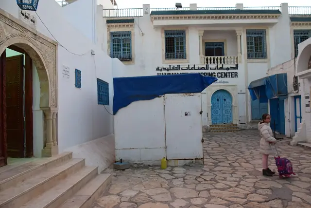

Le cabinet
Cabinet de gynécologie et d'obstétrique du Dr Aymen Boujneh à Hammamet. Consultations sur rendez-vous.
QualificationGynécologue obstétricien
N° d'Ordreà confirmer
Languesà confirmer
ConventionnementCNAM à confirmer
Consultations
D'après la fiche publique du cabinet sur med.tn :
- Échographie 3D/4D (d'après la fiche med.tn)
- Conventionné CNAM (d'après la fiche med.tn, à confirmer)
- Suivi de grossesse et gynécologie : détail des consultations à confirmer
Horaires
| Lundi | à confirmer |
| Mardi | à confirmer |
| Mercredi | jusqu'à 18h00 |
| Jeudi | à confirmer |
| Vendredi | à confirmer |
| Samedi | à confirmer |
| Dimanche | à confirmer |
Horaire relevé sur la fiche Google le 30/09/2026. Autres jours et horaires complets à confirmer avec l'établissement.
Prendre rendez-vous
Par téléphone au +216 28 661 641 ou par WhatsApp avec le formulaire ci-dessous.
Accès
Hammamet (adresse exacte à confirmer)
